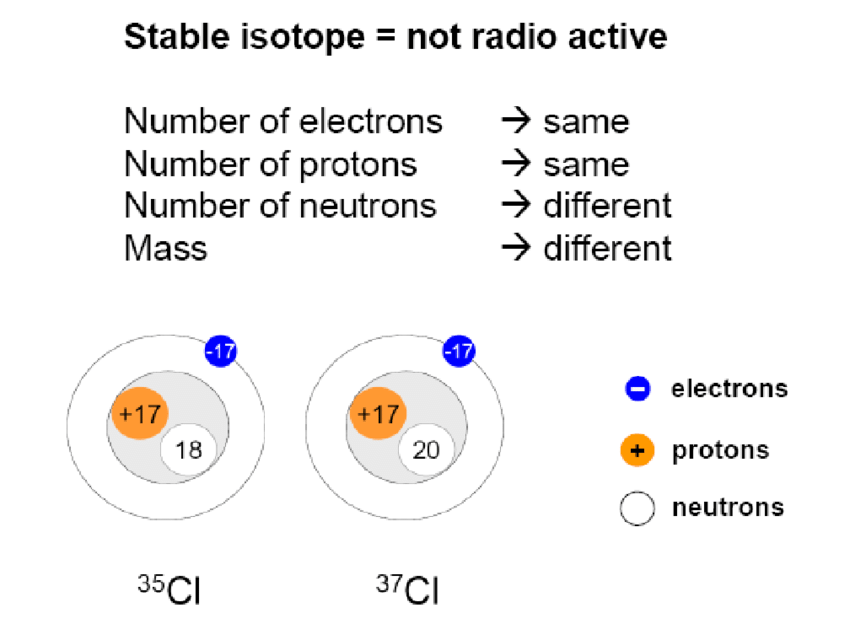
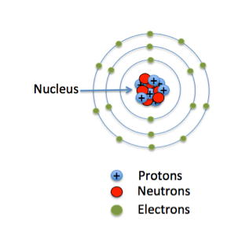

What is Isotope?
An isotope refers to different forms of the same chemical element that have the same number of protons but different numbers of neutrons in their atomic nuclei. This variation in neutron number leads to different atomic masses for each isotope of an element. Despite having the same chemical properties due to the same number of protons and electrons, isotopes of an element can have different physical properties. For example, carbon has two stable isotopes: carbon-12 and carbon-13, which have 6 protons and 6 or 7 neutrons, respectively.
One common daily life example of isotopes is in medical imaging and treatments. For instance, iodine-131 is a radioactive isotope used in the treatment of thyroid disorders. In medical diagnostics, carbon-14, another isotope of carbon, is used in radiocarbon dating to determine the age of archaeological finds. This technique measures the amount of carbon-14 remaining in a sample, which helps scientists estimate how long it has been since the organism's death. These applications demonstrate how isotopes are not just a theoretical concept but have practical uses in medicine and research.
Why is it essential to learn Isotope?
Learning about isotopes is crucial due to their significant role in medical applications. Radioisotopes, such as iodine-131, are used in diagnosing and treating various health conditions, including thyroid cancer and hyperthyroidism. Iodine-131 emits radiation that can target and destroy thyroid cells, making it a powerful tool in treating thyroid disorders. Similarly, technetium-99m is widely used in imaging techniques such as PET scans and SPECT scans, allowing doctors to visualize internal organs and diagnose diseases with greater precision. Understanding how these isotopes work helps improve medical treatments and diagnostic procedures, directly impacting patient care and health outcomes.
Isotopes are also essential in scientific research, particularly in fields like archaeology and environmental science. For example, radiocarbon dating, which uses the isotope carbon-14, allows scientists to determine the age of ancient artifacts and fossils. This method has been instrumental in studying human history, prehistoric life, and the evolution of civilizations. In environmental science, isotopes like oxygen-18 and hydrogen-2 are used to trace water sources and climate patterns. By learning about isotopes, researchers can make more accurate measurements and gain insights into various natural processes, contributing to our understanding of the world and the development of new technologies.
In industry, isotopes are used for quality control and improving manufacturing processes. For example, radioactive isotopes are employed in non-destructive testing methods to inspect the integrity of materials and structures, such as pipelines and welds, without causing damage. This ensures that products and infrastructure meet safety standards and function correctly. Additionally, isotopes are used in tracer studies to monitor the flow of materials and detect leaks in systems. Understanding isotopes and their applications helps improve industrial processes, enhance safety, and ensure the reliability of products and infrastructure in everyday life.
Types of Isotopes
Stable Isotopes
Stable isotopes do not undergo radioactive decay and remain unchanged over time. They are valuable in a wide range of scientific and industrial applications due to their constant and predictable behavior. For example, carbon-12 and carbon-13 are stable isotopes of carbon. Carbon-12, which makes up about 98.9% of carbon in nature, is commonly used in organic chemistry and carbon dating, while carbon-13 is utilized in studying metabolic processes and tracing chemical pathways. The ratio of these stable isotopes can provide insights into biological processes, environmental conditions, and material composition.
Radioactive Isotopes
Radioactive isotopes, or radioisotopes, are unstable and decay over time, emitting radiation in the process. They are crucial in various applications, including medicine and research. A well-known example is iodine-131, which is used in medical treatments for thyroid disorders. As iodine-131 decays, it emits radiation that can target and destroy thyroid cells, making it a key tool in treating thyroid cancer and hyperthyroidism. Another example is uranium-238, which is used in dating geological samples and understanding the age of rocks and minerals through radiometric dating techniques.
Cosmogenic Isotope
Cosmogenic isotopes are produced when cosmic rays interact with the Earth's atmosphere or surface. These isotopes are useful in studying cosmic ray interactions and dating geological and archaeological samples. An example is beryllium-10, which is formed when cosmic rays strike oxygen and nitrogen in the Earth's atmosphere. Beryllium-10 is used in cosmogenic dating to determine the exposure age of rocks and glacial ice. This helps scientists understand past climate conditions and geological processes by analyzing the concentration of these isotopes in samples.
Tracer Isotope
Tracer isotopes are used to trace the movement and interactions of substances within systems. They are commonly employed in research and industry to monitor processes and detect changes. For instance, phosphorus-32 is a radioactive isotope used as a tracer in agricultural studies to track the uptake of phosphorus by plants. By adding phosphorus-32 to fertilizers and measuring its movement through soil and plants, researchers can optimize nutrient management and improve crop yields. Tracer isotopes provide valuable data for understanding and improving various processes in scientific and industrial applications.
Research and Studies
Discovery of Radioactivity (1896)
The discovery of radioactivity by Henri Becquerel in 1896 marked the beginning of our understanding of isotopes. Becquerel observed that uranium salts emitted radiation without an external energy source, leading to the identification of radioactive decay. This discovery laid the groundwork for the study of radioactive isotopes and their applications. Subsequent research by Marie and Pierre Curie furthered the understanding of radioactivity and led to the identification of additional radioactive elements, such as radium and polonium. This foundational work established the basis for the study and use of isotopes in various scientific fields, including medicine and radiometric dating.
Development of Mass Spectrometry (1918)
The development of mass spectrometry by Francis Aston in 1918 was a crucial advancement in isotope research. Aston's invention allowed for the precise measurement of atomic masses and the identification of different isotopes of elements. By analyzing the mass-to-charge ratio of ions, mass spectrometry enabled scientists to separate and identify isotopes with high accuracy. This technology has since become essential for studying isotopic compositions in chemistry, biology, and environmental science. Aston's work earned him the Nobel Prize in Chemistry in 1922 and greatly expanded the understanding of isotopic variations and their applications.
Discovery of Carbon-14 Dating (1949)
The development of carbon-14 dating by Willard Libby in 1949 revolutionized archaeology and geology. Carbon-14, a radioactive isotope of carbon, decays at a known rate, allowing scientists to date organic materials up to about 50,000 years old. Libby's method provided a reliable way to determine the age of archaeological artifacts, fossils, and geological samples, transforming fields such as paleontology and ancient history. For this groundbreaking work, Libby was awarded the Nobel Prize in Chemistry in 1960. The application of carbon-14 dating has profoundly impacted our understanding of human history and prehistory.
Identification of Isotope Tracers in Biological Systems (1950s)
In the 1950s, researchers began to utilize isotopic tracers to study biological systems and metabolic processes. The use of isotopes like phosphorus-32 and sulfur-35 allowed scientists to track the movement and incorporation of nutrients and molecules within living organisms. This research led to significant advances in biochemistry and molecular biology, including the understanding of cellular metabolism, DNA synthesis, and protein function. Isotopic tracers have become indispensable tools in biological research, diagnostics, and medical imaging.
Facts about Isotopes
One less known but essential fact is that isotopes of the same element exhibit nearly identical chemical behavior due to their identical electron configurations. This uniformity occurs because chemical reactions are driven by interactions between electrons, not by differences in the number of neutrons. For example, carbon-12 and carbon-14, both isotopes of carbon, react chemically in the same way. This principle is crucial for using isotopes as tracers in biological and chemical studies, as it ensures that the isotopic label does not alter the chemical properties of the substances being studied.
Isotopes play a significant role in the precision of atomic clocks, which are used to measure time with exceptional accuracy. For example, the cesium-133 isotope is used in cesium atomic clocks, which define the second in terms of the vibrations of cesium atoms. These atomic clocks are essential for global positioning systems (GPS), telecommunications, and scientific research. The stability and accuracy of these clocks rely on the consistent behavior of isotopes, highlighting their importance in timekeeping and technology.
Isotopes provide valuable insights into environmental science, including the study of climate change and pollution. For instance, variations in oxygen and hydrogen isotopes in ice cores can reveal historical climate patterns and shifts in temperature. Similarly, isotopic analysis of carbon in marine sediments helps track changes in ocean chemistry and carbon cycles. These isotopic signatures help scientists understand environmental changes over time and assess the impacts of human activity on ecosystems.
The concept of "isotope effects" refers to the differences in reaction rates or equilibrium positions between isotopic variants of a molecule. For example, reactions involving hydrogen isotopes (protium, deuterium, and tritium) can exhibit measurable differences in reaction rates. These effects are used to study reaction mechanisms, rate laws, and molecular interactions. Understanding isotope effects can provide detailed insights into chemical processes and improve the design of chemical reactions in both industrial and laboratory settings.
The use of isotopes in medicine dates back to the early 20th century, with one of the first applications being the treatment of thyroid disorders using iodine-131. This isotope emits radiation that targets thyroid cells, providing a therapeutic approach for hyperthyroidism and certain types of thyroid cancer. The development of radioactive tracers and imaging techniques, such as positron emission tomography (PET) scans using fluorine-18, has revolutionized diagnostic medicine. These innovations underscore the profound impact of isotopic research on medical diagnosis and treatment.
Quiz
1. How did the Hubble Deep Field observation in 1995 change our understanding of the universe?
2. Describe one contribution of ancient Babylonians to early astronomy.
3. Explain the impact of the Islamic Golden Age on the development of astronomy during the medieval period.
4. How did the heliocentric model proposed by Copernicus revolutionize our understanding of the solar system?
5. What are some of the key research areas in contemporary astronomy, and why are they significant?